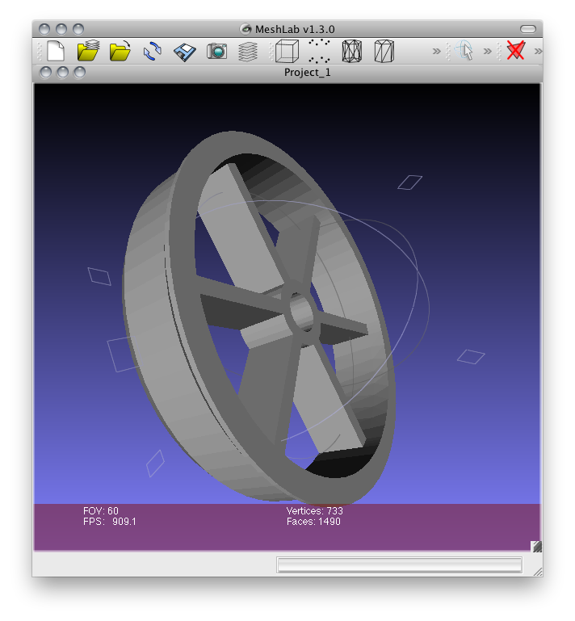
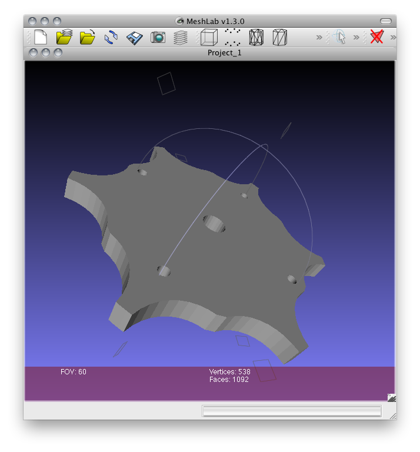
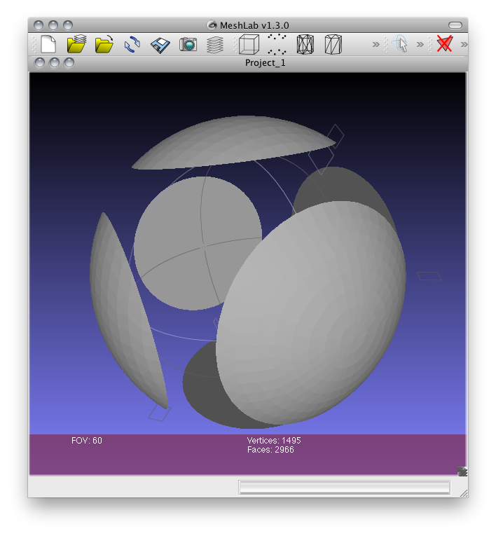

Cadmium is a python library built on top of PythonOCC and OpenCASCADE, to give simple interface to create solid models.
Parametric Bushing | |
|  | |
Caterpillar chain wheel | |
|  | |
Abstract | |
|  |
pythonOCC 0.5
GNU Affero General Public License
Jayesh Salvi @jyro
You can download this project in either zip or tar formats.
You can also clone the project with Git by running:
$ git clone git://github.com/jayesh3/cadmium